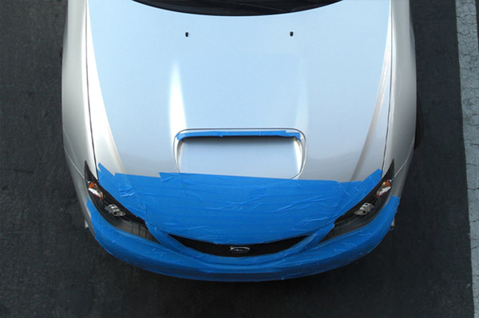
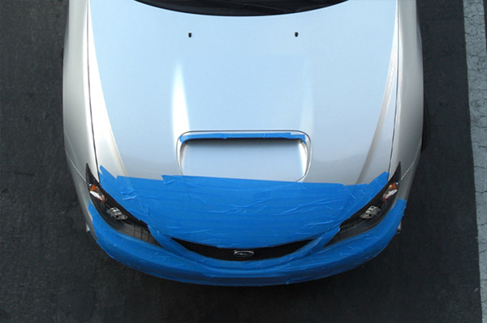

I decided not to wait till tomorrow. Went and had the car washed then used lower grade (least sticky) 3M masking tape to temporarily wrap up front end.

Front end wrapped up with 3M masking tape, cross country mode.
"
I decided not to wait till tomorrow. Went and had the car washed then used lower grade (least sticky) 3M masking tape to temporarily wrap up front end.

Front end wrapped up with 3M masking tape, cross country mode.
Archived comments
Sticky Tape
— Emerald Arse!Should have used the green stuff from Home Depot. Guaranteed not to leave stick stuff when you take it off.
This is pretty guaranteed too
— f1vladThis is pretty guaranteed too Duane. It's low sticky grade. I've used these on carwrap design. Anyway, yesterday I took all the tape off as I had to clean the car. So there's no stickiness after abotu 2 weeks of being there.
Someone in Reno thought my
— f1vladSomeone in Reno thought my car was stolen because of this thing. Called cops on me.